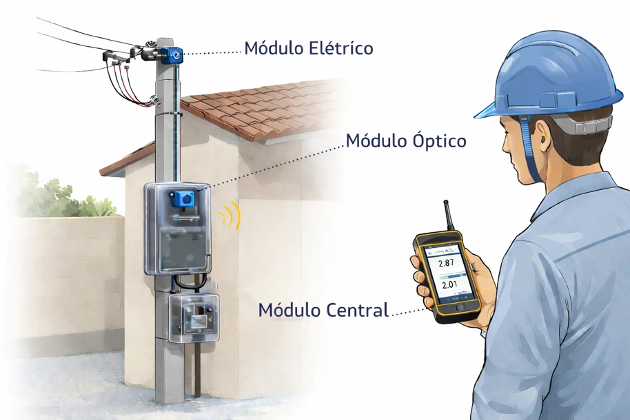

Detector de Perda Não TécnicaNon-Technical Loss DetectorDetector de Pérdidas No Técnicas Sistema e Método para Identificação e Quantificação de Perda Não Técnica de Energia Elétrica em Sistemas de Medição de Baixa TensãoSystem and Method for Identifying and Quantifying Non-Technical Electricity Losses in Low-Voltage Metering SystemsSistema y Método para la Identificación y Cuantificación de Pérdidas No Técnicas de Energía Eléctrica en Sistemas de Medición de Baja Tensión
ResumoSummaryResumen
Sistema portátil para identificar e quantificar a perda não técnica de energia em unidades consumidoras de baixa tensão. Módulos de medição elétrica instalados no ramal de ligação, antes do padrão de entrada, e um módulo de leitura óptica acoplado ao medidor comparam, sob a carga real do consumidor, a energia que passa pelo ramal com a energia registrada pelo medidor. Assim, a energia desviada é detectada e quantificada com nível de confiança declarado, independentemente do tipo de irregularidade.
Portable system to identify and quantify non-technical energy losses at low-voltage consumer units. Electrical measurement modules installed on the service drop, upstream of the meter box, and an optical reading module attached to the meter compare, under the consumer's real load, the energy flowing through the service drop with the energy registered by the meter. Diverted energy is thus detected and quantified with a stated confidence level, regardless of the type of irregularity.
Sistema portátil para identificar y cuantificar las pérdidas no técnicas de energía en unidades consumidoras de baja tensión. Módulos de medición eléctrica instalados en la acometida, antes del tablero de medición, y un módulo de lectura óptica acoplado al medidor comparan, bajo la carga real del consumidor, la energía que pasa por la acometida con la energía registrada por el medidor. Así, la energía desviada se detecta y cuantifica con un nivel de confianza declarado, independientemente del tipo de irregularidad.
- Medição a montante do padrão de entrada, sem carga artificial
- Leitura óptica do medidor e comunicação por radiofrequência
- Limiar de decisão baseado na incerteza da cadeia de medição
- Operação desassistida como registrador em medição fiscalizadora
- Measurement upstream of the meter box, with no artificial load
- Optical meter reading and radio-frequency communication
- Decision threshold based on measurement chain uncertainty
- Unattended operation as a recorder for inspection metering
- Medición antes del tablero, sin carga artificial
- Lectura óptica del medidor y comunicación por radiofrecuencia
- Umbral de decisión basado en la incertidumbre de la cadena de medición
- Operación desatendida como registrador en medición de fiscalización